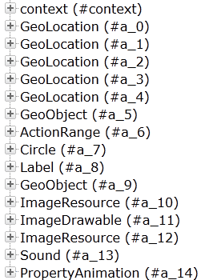
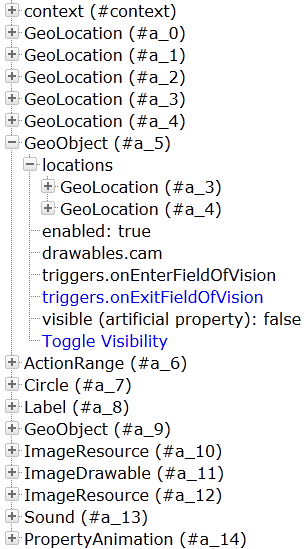

ADE
The ARchitect Desktop Environment (ADE) allows you to simulate the behavior of your ARchitect file on an ordinary web browser, and observe the properties of your AR objects and simulate user interaction and events.
How can I enable the ADE for my ARchitect file?
To enable ADE functionality, simply add the ade.js file included in the ARchitect Tools to the list of imported scripts in the header-section of your ARchitect file:
<html>
<head>
<script src="architect://architect.js"></script>
<script src="[your_path_to_the_ade_file]/ade.js"></script>
</head>
<body>
...
</body>
</html>Next, open the ARchitect file in an ordinary web browser. Your browser will immediately render the HTML content specified in your ARchitect file, as well as starting to execute the provided JavaScript functionality.
When the file was successfully loaded, you will see your specified HTML content at top of the page. Immediately below your HTML content, you will see the list of ARchitect objects that you have created (if you did not yet create any ARchitect objects, you will only see the automatically generated "context" object). This list represents all ARchitect objects known to the system, and the list will be automatically updated as soon as new objects are created or existing ones are modified.
The list will always specify the type of the ARchitect object (for example GeoLocation) and the id of the object, which is stored in the immutable __id property.

For instance, the second line in the list represents a GeoLocation with the __id property set to a_0.
How can I use the ADE?
As soon as you create new ARchitect objects, they will appear in the list. Click on the '+' symbol next to the object's description to expand it and observe the values of the object's properties defined in the ARchitect specification.

Blue color-coding of a property indicates that the trigger or function is defined and can be executed; black color-coding indicates that the trigger or function is undefined and thus can not be executed. In the example above, we have defined an onExitFieldOfVision trigger. Clicking on the trigger will execute the specified function. If your trigger changes a certain property of the GeoObject, you will immediately see the change in the above list of properties.
Additionally, you can simulate other events occurring in regards to certain objects. For a GeoObject, you can simulate that the GeoObject is in, or outside of the field of vision, of the user. Clicking on Toggle Visibility will simulate that the GeoObject is
coming into the field of vision, or is leaving the field of vision
respectively. Associated triggers will automatically be triggered (just as they are triggered on the mobile device), and the artificial property
`visible changes its value. Artificial properties are properties that
do not exist on a mobile device; they are solely used in the ADE to
simulate the status of the ARchitect object.
ARchitect objects, triggers and events will behave in the exact same way in the ADE as they would on a mobile device. The only exception is the PropertyAnimation object, which will not change the value over time and according to the specified EasingCurve in the ADE, PropertyAnimations will change the value only once at the end of the Animation, rather than continuously.